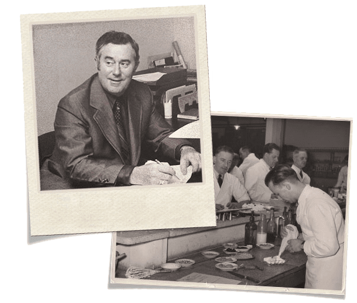
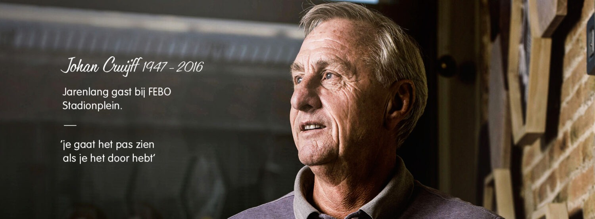
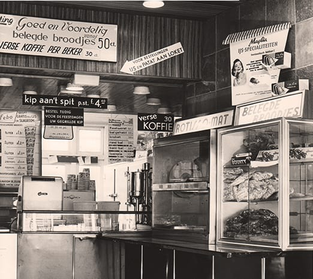

1936
De geschiedenis begint in 1936. Johan de Borst startte als banketbakker in de Ferdinand Bolstraat in Amsterdam.

1941
In 1941 opent De Borst officieel zijn banketbakkerij ‘Maison FEBO’. Het succes groeit snel.

1960–1975
Rond 1960 komen de eerste wandautomaten in beeld. Deze zelfbediening maakt FEBO razend populair, vooral onder Amsterdammers die snel en warm een snack wilden trekken.

1976
FEBO introduceert de grillburger, een van de meest iconische producten in het assortiment.
1993
In 1993 wordt FEBO verder geprofessionaliseerd en groeit de formule uit tot een franchiseorganisatie.
Van 1941 tot nu
Al meer dan 80 jaar maakt FEBO elke dag verse kroketten, burgers en snacks. De formule blijft groeien en vernieuwen.